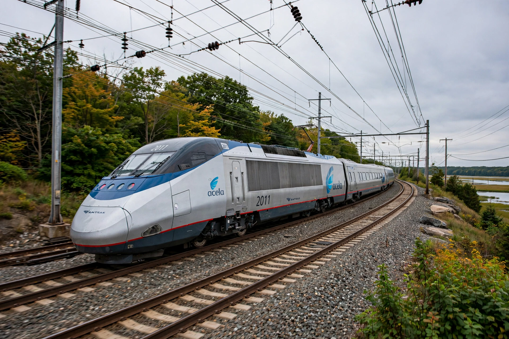

The Acela (originally the Acela Express until September 2019) is Amtrak's flagship passenger train service along the Northeast Corridor (NEC) in the Northeastern United States between Washington, D.C., and Boston via 13 intermediate stops, including Baltimore, Philadelphia and New York City. Acela trains are the fastest in the Americas, reaching 150 mph (240 km/h) on sections near Mansfield, Massachusetts and in Rhode Island, though the average speed including stops is about 66 mph (106 km/h). The name "Acela" was coined as a portmanteau of "acceleration" and "excellence".

| Operator | Amtrak |
|---|---|
| First service | 11 December 2000 |
| Route | Washington, D.C. – New York – Boston (Northeast Corridor) |
| Distance | 457 mi (735 km) |
| Top speed | 150 mph (240 km/h) in service |
Acela service began on 11 December 2000, using 20 trainsets built by a consortium of Bombardier and Alstom, derived from the French TGV but built to heavier U.S. crash standards and equipped with active tilting to negotiate the curving NEC. The tilting mechanism, which was initially restricted because the trains proved wider than specified, allows faster running through curves in Connecticut and elsewhere. Acela offers Business Class and First Class only, with no coach class, and at peak times before the COVID-19 pandemic carried over 3.5 million passengers annually, capturing a large share of the air-rail market between New York and both Washington and Boston.
Amtrak contracted Alstom in 2016 to build 28 new Avelia Liberty trainsets, branded as the NextGen Acela, with active tilt, higher capacity and a design speed of 186 mph (though limited by infrastructure to 160 mph). After extensive delays in testing and qualification, the new trainsets entered revenue service in August 2025. Investments such as the Gateway Program and replacement of the Baltimore & Potomac Tunnel are intended to raise speeds further.